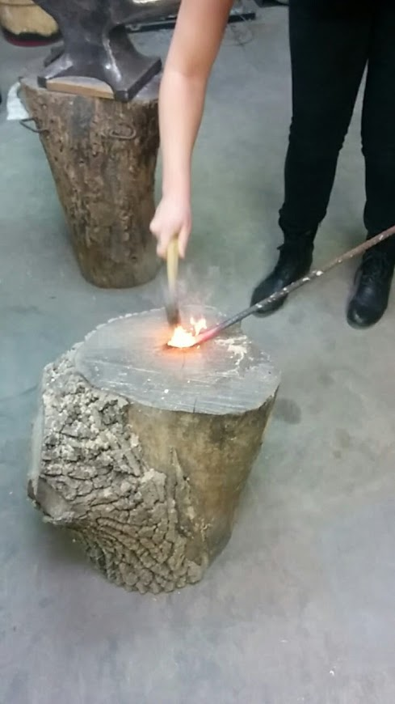
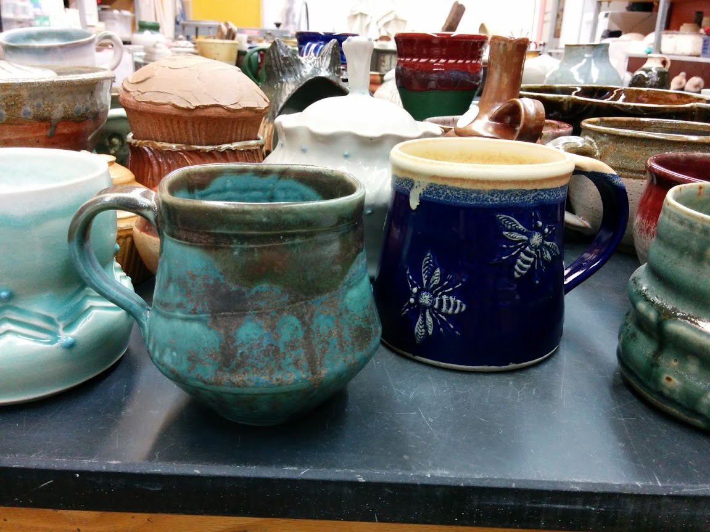
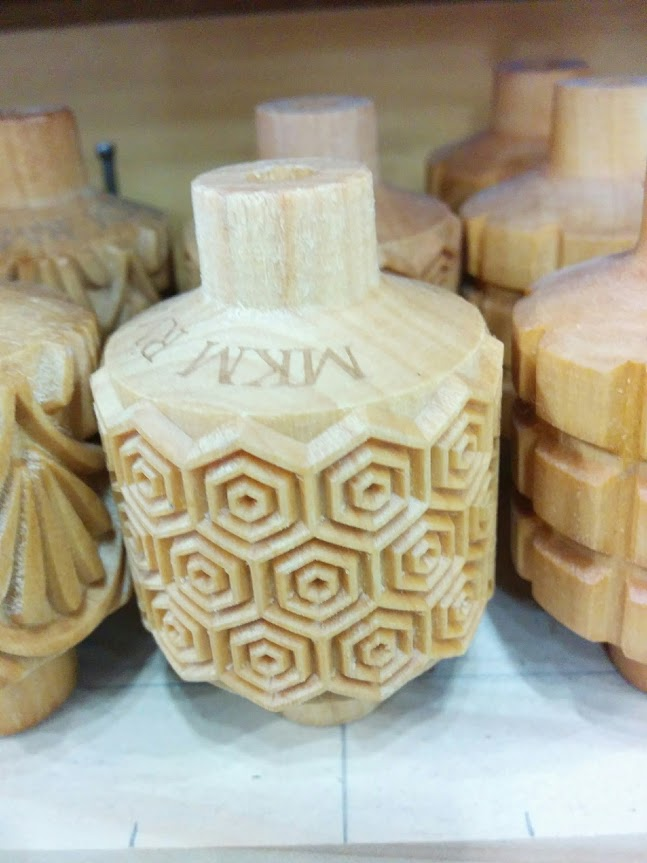

You'll need some space and tools, possibly electricity and WiFi as well. You may be surprised to realize how
close you are to getting started or finishing your newest project with these resources...
| Snapshot |
Where |
Tools |
Amenities |
Pricing Model |
| ⚜ |
at home |
sewing machines, drill, hand saw, pencil torch |
WiFi |
------- |
|

|
Arch Reactor
|
table saw, planer, jointer, drill press, 3-d printers, laser cutter, milling machine, wood lathe, metal
lathe, metal grinder, forge, anvil, assorted other hand tools |
WiFi, other members are happy to share their expertise |
Monthly membership fee of $45 for full members (coop-style: volunteer hours expected) |
|

|
Craft Alliance
|
pottery wheels, slab roller, electric kiln, gas kiln, soda kiln, weaving looms, glass fusing kiln, torches,
casting centrifuge, fume hoods |
WiFi, knowledgeable faculty, organized yet casual classes, select open studio hours |
$$-$$$ by the class |

|
Perennial
|
chopsaw, bandsaw, jig saw, drills |
|
$$ by the class |
|

|
Krueger Pottery
|
kilns, supplies available in shop immediately next door |
|
$$ by the class |

|
LaunchCode
|
(BYO Laptop) |
WiFi, knowledgeable mentors |
------ |